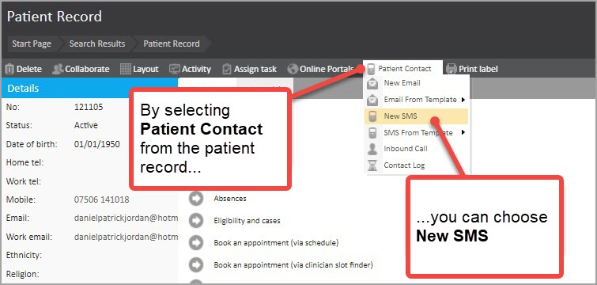
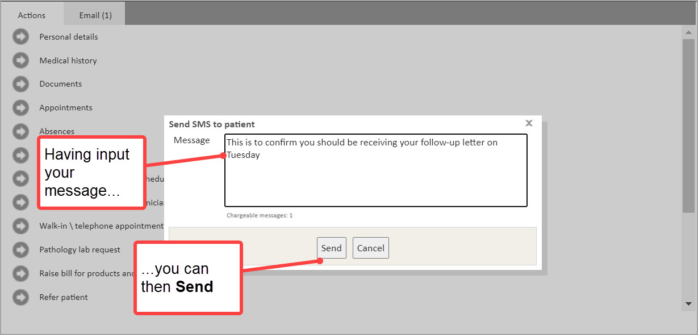
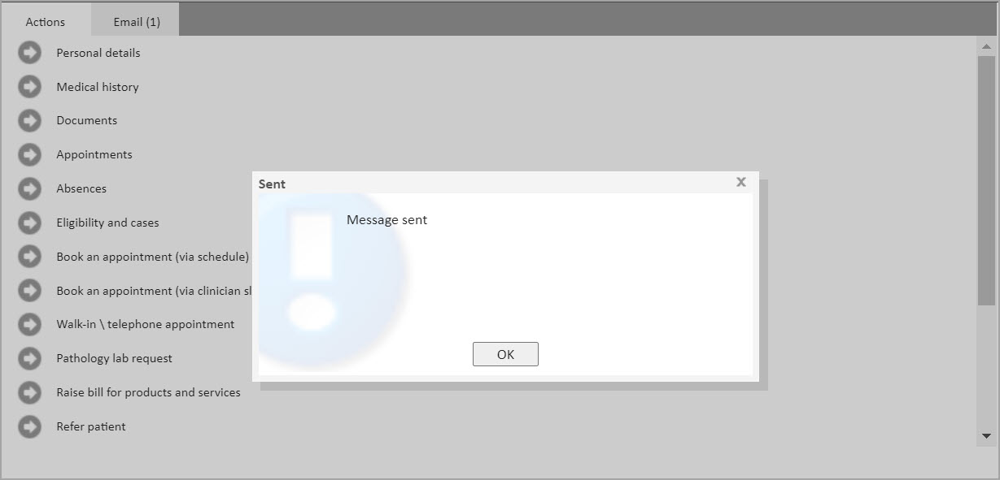
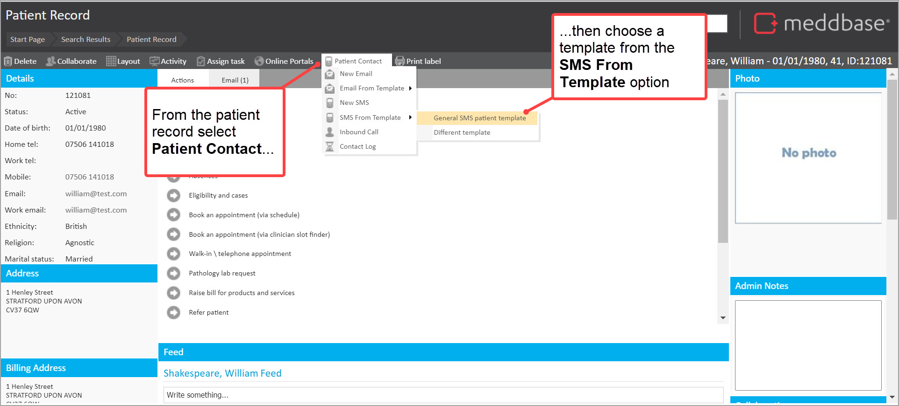
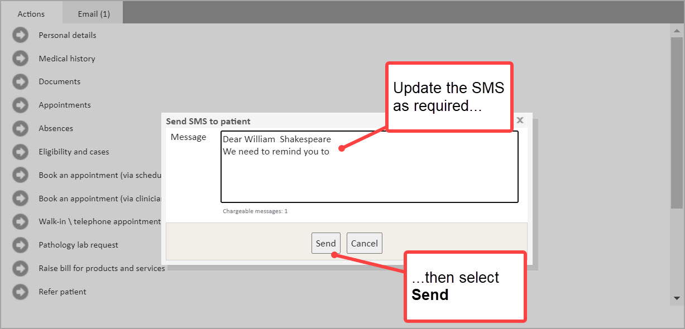
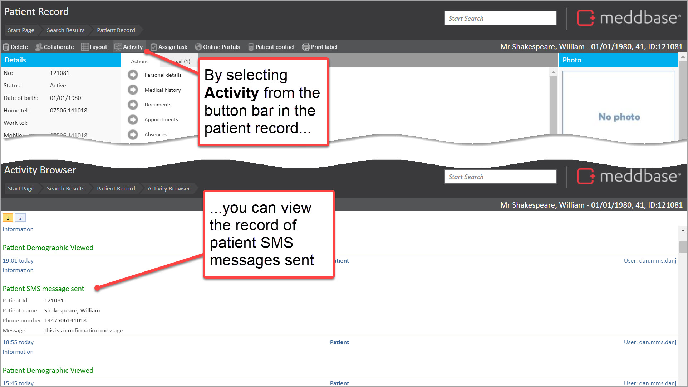

You can send SMS messages to patients from the patient record. These can be ‘ad-hoc’ messages with no pre-configured text or messages based on templates. This article outlines how you can send SMS messages in both of these scenarios.
To send an ad-hoc SMS you can do as follows:
1. Find the patient record
2. Go to Patient contact from the button bar
3. Select New SMS

4. Input the text for the message
The count of chargeable messages to be sent is updated as you type in the text
5. Click on Send

The message is sent. You are also presented with a dialogue confirming that the message has been sent.
6. Click on OK

To send an SMS based on a template to a patient from the patient record, you can do as follows:
1. Find the patient record
2. Go to Patient contact from the button bar
3. Select SMS From Template
4. Choose the pre-configured SMS template from the sub-menu

At this point, the Send SMS to patient dialogue is presented. Any template codes from the SMS template are merged to show patient-related data. As noted above, the number of chargeable messages is shown and will dynamically update based on the message content.
From here:
5. Update the SMS message content as required
6. Select Send

The message is sent. As in the example above, you are then presented with a confirmation dialogue confirming that the message has been sent.
6. Click on OK
When an SMS message is sent from the patient record, you can select Activity to view the record of the SMS message that has been sent.
